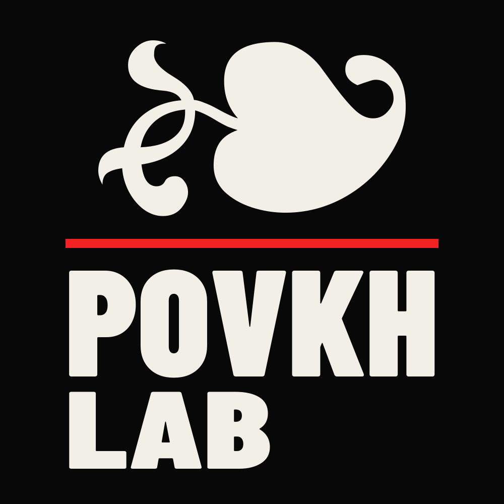
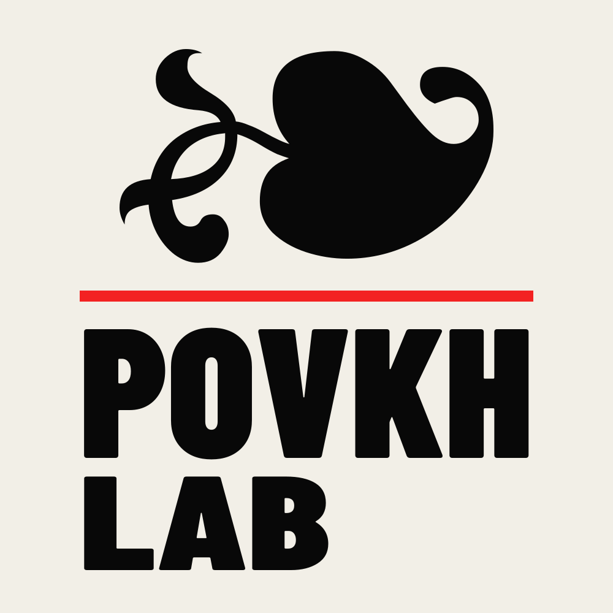
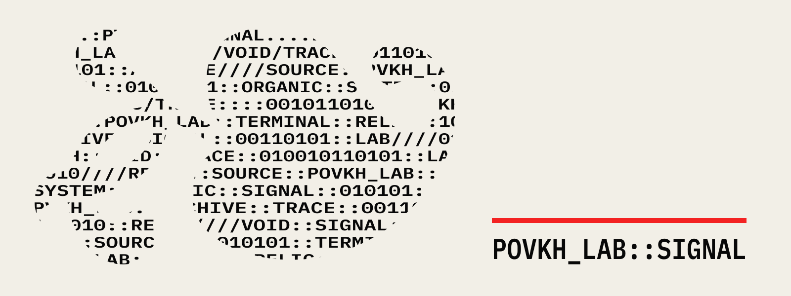
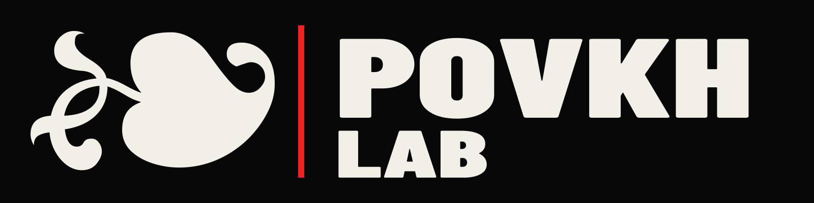
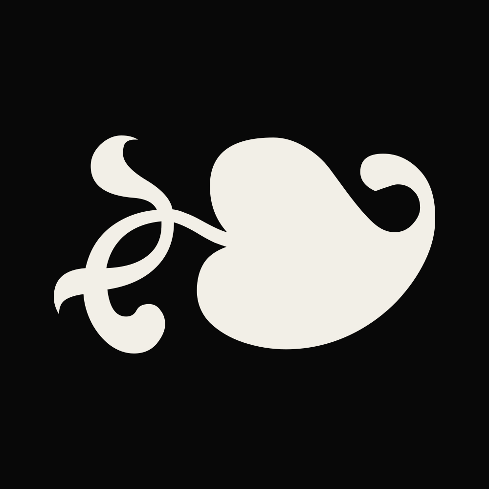
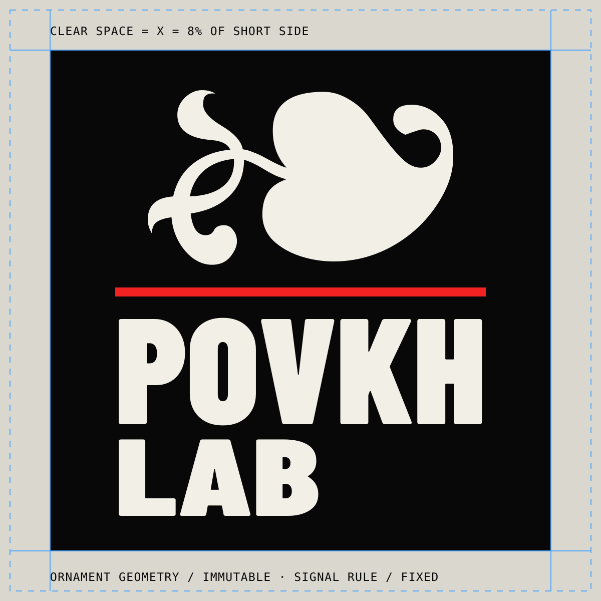
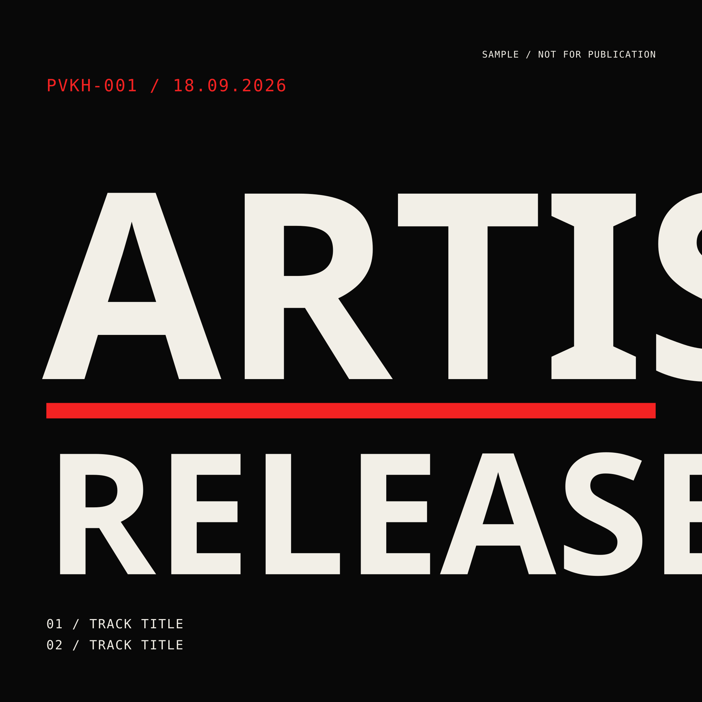
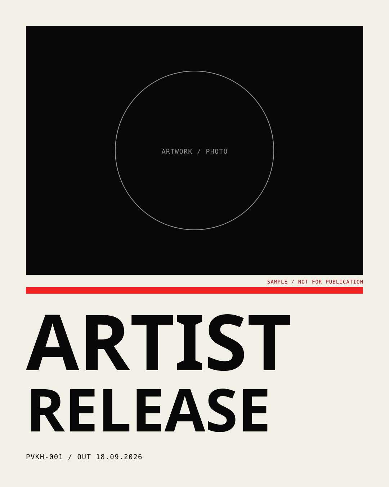
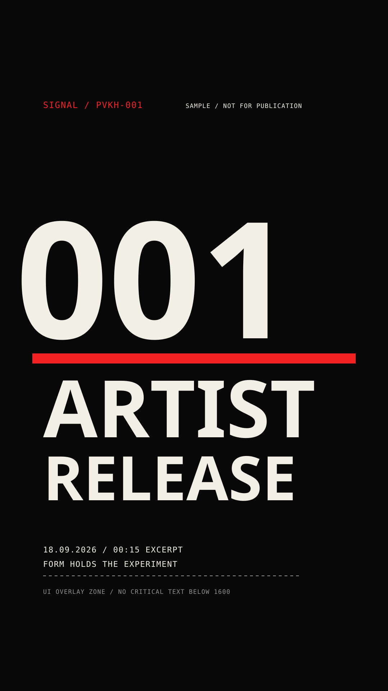

POVKH LAB Terminal Relic brand system

Строгая система для свободного звука.
ЗВУК
КАК
МЕТОД
POVKH LAB — независимый электронный лейбл и кураторская платформа. Здесь звук рассматривается как материя: гипотеза, опыт, отбор, точная фиксация результата.
POVKH — авторская подпись и ответственность за выбор. LAB — метод работы, а не декоративная «лаборатория». Каждый релиз становится исследованием, каталог — архивом состояний электронной музыки.
Органический реликт удерживается точной типографикой и сеткой: артисты и музыка различаются, но дисциплина формы остаётся узнаваемой.
Давать новым формам электронной музыки точное звуковое, визуальное и профессиональное воплощение.
Свобода внутри системы. Эксперимент обязан быть осмысленным и законченным.
Не поток контента, а цельные музыкальные объекты и долговечный каталог.

TERMINAL
RELIC
Основной знак соединяет живую геометрию ❧ с жёстким именем POVKH LAB и Signal Red rule.
Органическая форма, найденный сигнал и непредсказуемость звука.
Порог, монтажный срез, playhead и состояние записи.
Имя, сетка и выпускная дисциплина удерживают эксперимент.
Синтаксис, индексы и статусы — без прицелов и scope-графики.
Файлы с окончанием -outlined.svg — производственные мастера: буквы переведены в кривые и не требуют установленного шрифта.
Версии логотипа и иерархия применения
PRIMARY DARK
По умолчанию: аватар, страница лейбла, заставка, мерч, бренд-пост.

PRIMARY LIGHT
Для светлой бумаги, документов и спокойных editorial-носителей.

ASCII SIGNATURE
Только крупный формат: terminal-панели, motion, inserts и process-материалы.


Минимум 96 px / 26 мм
Минимум 160 px / 42 мм
Минимум 24 px / 7 мм
Минимум 600 px / 160 мм

НЕ
ЛОМАТЬ
РЕЛИКТ
X = 8% короткой стороны. Оставляйте минимум X с каждой стороны. Внутрь поля не входят текст, край фотографии, sponsor mark, trim или UI.
- Не растягивать, не наклонять, не вращать.
- Не менять толщину и позицию красной линии.
- Не зеркалить, не упрощать и не перерисовывать орнамент.
- Не добавлять glow, bevel, outline, shadow, grain.
- Не помещать знак в прицел, scope или декоративную HUD-рамку.
- Не перекрашивать мастер под каждый релиз.
- На активном фото использовать защитное поле Void/Bone.
- В анимации геометрия всегда возвращается к идеальному мастеру.
70 / 20 / 10
Красный — действие и пунктуация, а не декоративный фон.
RGB 8 / 8 / 8
CMYK 0 / 0 / 0 / 97
RGB 242 / 239 / 231
CMYK 0 / 1 / 5 / 5
RGB 243 / 34 / 34
CMYK 0 / 86 / 86 / 5
RGB 143 / 145 / 143
CMYK 1 / 0 / 1 / 43
Bone / Void — основной дуэт. Signal / Void — CTA, дата, линия. Мелкий красный текст на Bone — Signal Ink #B5121B.
CMYK — стартовые значения. Красный обязательно проверять цветопробой на выбранной бумаге.
Допустим один временный цвет внутри кампании, но он не заменяет Signal Red в мастер-логотипе.
BARLOW
CONDENSED
Display / 700–900 / uppercase / трекинг −2…−4%
Крупные заголовки, номера, даты, постеры. Не используется для длинного текста. Производственный логотип остаётся готовым outlined SVG и не перенабирается.
Редакционный текст должен быть спокойным, ясным и человеческим. Строка 55–72 знака, sentence case, вес 400–600.
IBM PLEX MONOКОНТРОЛИРУЕМАЯ
АНОМАЛИЯ
MONOLITH
Один крупный типографический объект занимает 55–90% поля.
THRESHOLD
Одна линия делит кадр 65/35 или 75/25. Она несёт смысл.
INDEX
Реальные данные работают как архивная маркировка, без псевдонауки.
VOID
Минимум 30% пустого поля и один объект высокого давления.
Hard crop, мелкое зерно 2–6%, threshold 2–4 тона, halftone одного масштаба, registration drift до 0,25%, directional blur одного слоя.
Bubble, smiley, mushrooms, random 3D, liquid wobble, rainbow neon, винил/наушники/equalizer как клипарт, псевдолабораторные колбы и бессмысленный AI-surreal.
Рабочие форматы и шаблоны контента



OBJECT / TYPE / DOCUMENT. Каталог и publisher mark находятся в утверждённых слотах.
Один вопрос на первый экран. Детали и контекст — следующие слайды карусели.
Signal → artwork → excerpt → date/CTA. Важные данные внутри UI-safe зоны.
CUT → PRESSURE →
SIGNAL → RELEASE
Жёсткий монтажный вход.
Медленное движение крупного слоя.
Линия проходит один раз.
Информация читается.
ФОТО
Документальная студия и сцена, прямой flash, глубокий чёрный, холодная нейтральная база, зерно, макро металла/кожи/бумаги, осознанный blur и отрицательное поле.
НЕ ДЕЛАТЬ
Bounce, elastic, liquid morph, постоянный RGB split, kaleidoscope, glitch packs, длинные 3D-заставки, мигание быстрее трёх раз в секунду.
Логотип не morph-ится и не растягивается. Двигаются маска, crop, окружение или позиция; финальный кадр всегда показывает чистую геометрию.
КОРОТКО.
ТОЧНО.
БЕЗ
ХАЙПА.
Факты и ощущения важнее обещаний. Мы не объясняем музыку до конца и не изображаем «безумный андеграунд».
«Recorded in one pass.»
«One resonator, no overdubs.»
«Sound as method.»
«Бомба», «дропчик», «мы взрываем», mind-blowing, next level, ряды emoji и пустая псевдонаука.
ИЗМЕНЯЕТСЯ КОНТЕНТ.
НЕ ИЗМЕНЯЕТСЯ СИСТЕМА.
Работа начинается с папки релиза и утверждённого master artwork. Никто не скачивает логотип из чата.
WIP → RVW → APR → PUB. Версии не перезаписываются; опубликованный файл сохраняется в delivery.
Проверить spelling, каталог, дату, safe zone, 32 px thumbnail, контраст, права, sRGB и субтитры.
| ИМЯ ФАЙЛА | PVKH_[CAT]_[ARTIST]_[RELEASE]_[ASSET]_[RATIO_OR_SIZE_OR_DURATION]_[STATUS]_vNN_YYYYMMDD.ext |
|---|---|
| ПРИМЕР | PVKH_001_ARTIST_RELEASE_ANNOUNCE_4x5_APR_v03_20260903.jpg |
| МАСТЕРЫ | Outlined SVG для логотипов · 3000×3000 artwork · 1080×1350 feed · 1080×1920 vertical · 3840×2160 YouTube thumbnail |
| ПРОВЕРКА | Mobile preview на 50% яркости · круглая обрезка · читаемость без звука · один CTA · один акцент |
SIGNAL T−21 → ANNOUNCE T−14 → CONTEXT T−10 → EXCERPT T−7 → DETAIL T−3 → OUT NOW T0. OPTIONAL POST-RELEASE: PROCESS T+2 → AFTERIMAGE T+7.
Если материал можно без потери выпустить на любом другом лейбле, он ещё не стал объектом POVKH LAB.